Atrakcje Historyczne i Kulturalne
Skansen w Klukach to doskonałe miejsce, by poznać życie dawnych mieszkańców regionu, w tym kultury słowińskiej. W pobliskiej Łebie odbywają się także różnorodne festiwale, koncerty i wydarzenia plenerowe, które urozmaicają czas spędzony nad morzem.
Osiedle
Dla mieszkańców osiedla dostępne są liczne atrakcje, które zapewnią zarówno relaks, jak i świetną zabawę:
1.Basen z podgrzewaną wodą
Na osiedlu znajduje się basen z podgrzewaną wodą, dostępny od 15 czerwca do 15 września. Z głębokością 1,35 m, jest idealnym miejscem do zabawy dla osób w każdym wieku. Dla najmłodszych przygotowano brodzik o głębokości 0,45 m. Wieczorem basen nabiera wyjątkowego uroku dzięki subtelnemu podświetleniu.
2.Plac zabaw dla dzieci
Dla dzieci przygotowaliśmy plac zabaw, gdzie maluchy mogą bawić się na statku i innych atrakcjach. To doskonała przestrzeń do nawiązywania nowych wakacyjnych przyjaźni i niezapomnianych chwil.
3.Spory ogródek
Osiedle oferuje dużą, zieloną przestrzeń z trawnikiem, idealną do rodzinnych pikników, zabaw na świeżym powietrzu czy relaksu w otoczeniu natury.
4.Trampolina
Dla aktywnych dzieci przygotowaliśmy trampolinę, która pozwoli na wspaniałą zabawę i rozwój ruchowy, gwarantując mnóstwo radości.
5.Pokój do gier
Na osiedlu znajduje się także pokój do gier, wyposażony w piłkarzyki oraz stół do tenisa stołowego. To świetne miejsce na rywalizację i wspólne spędzanie czasu z rodziną lub przyjaciółmi.
Udogodnienia
Bezpłatne Wi-Fi
Prywatny parking
Telewizor
Ogrzewanie
Basen na osiedlu
Galeria
- 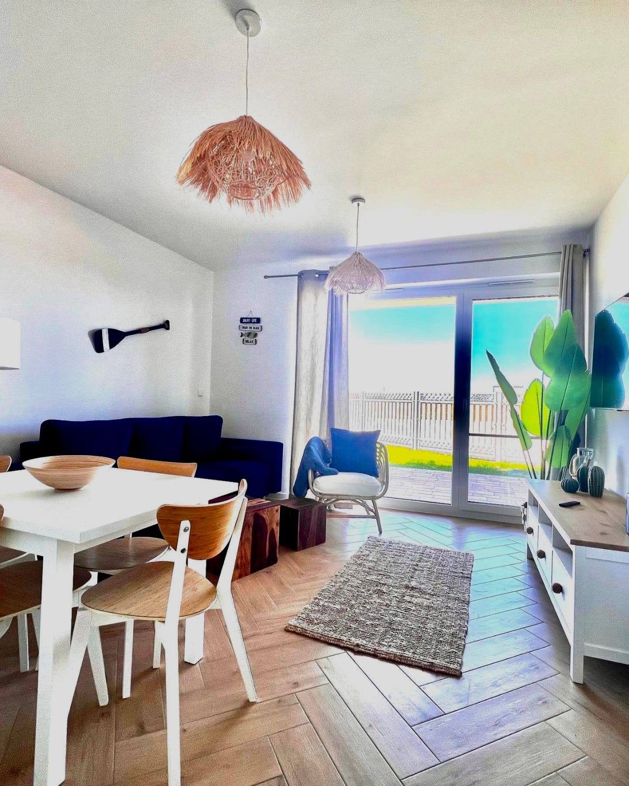
- 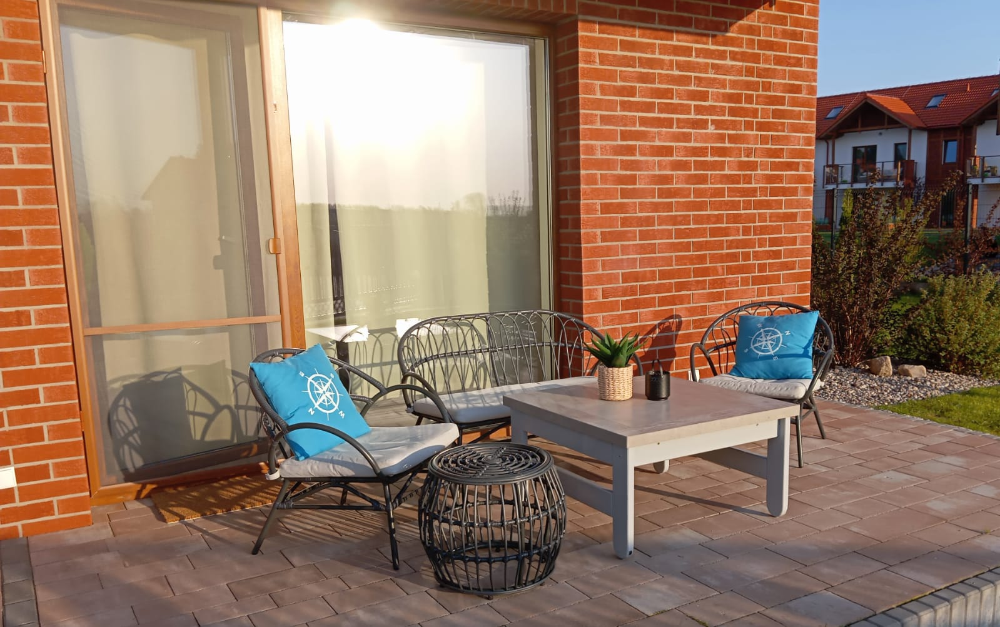
- 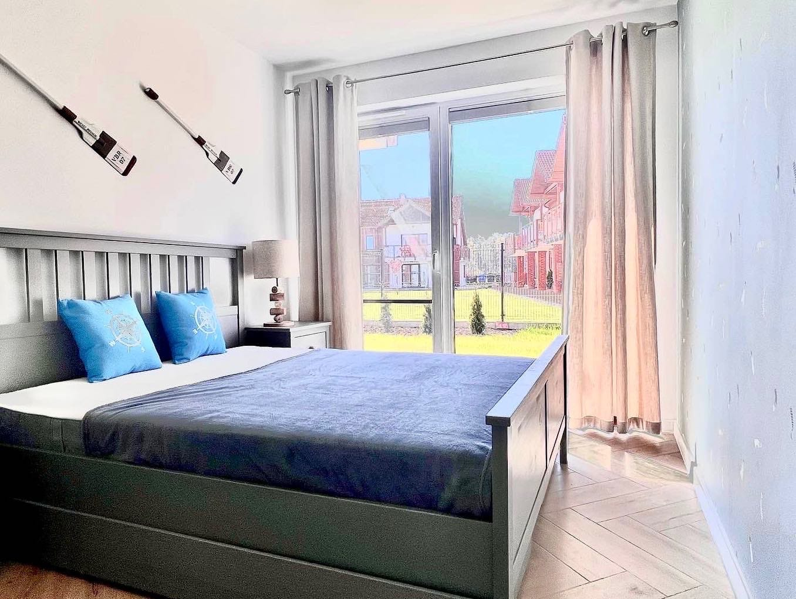
- 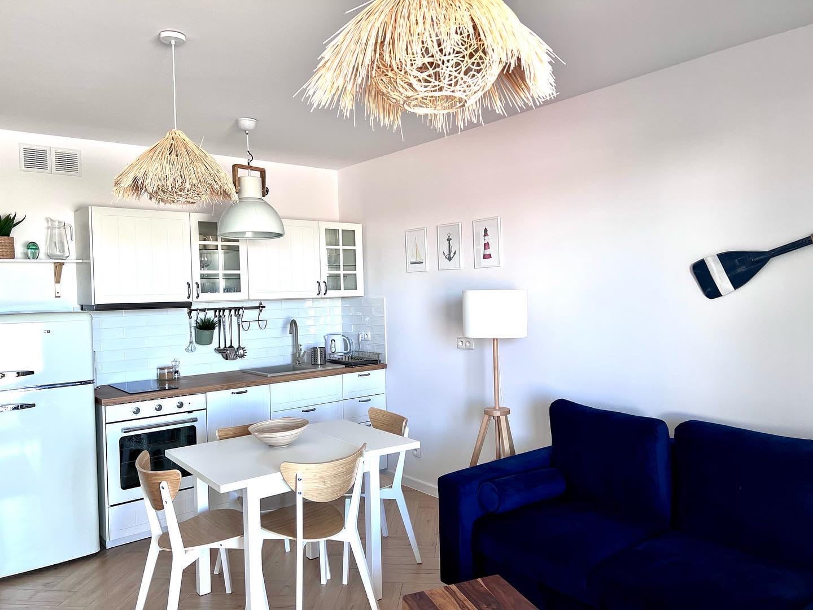
- 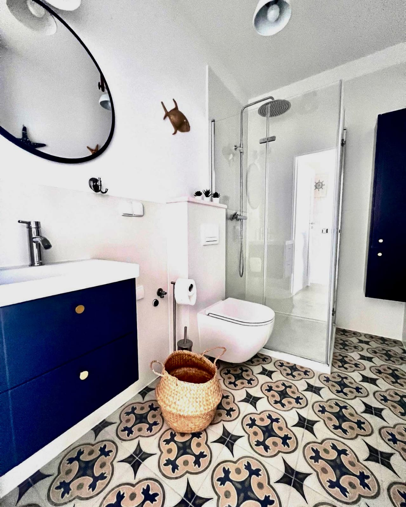
- 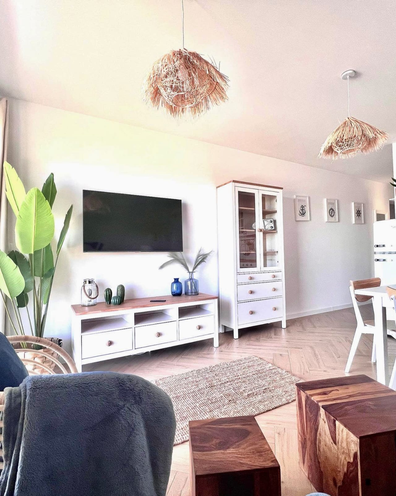
- 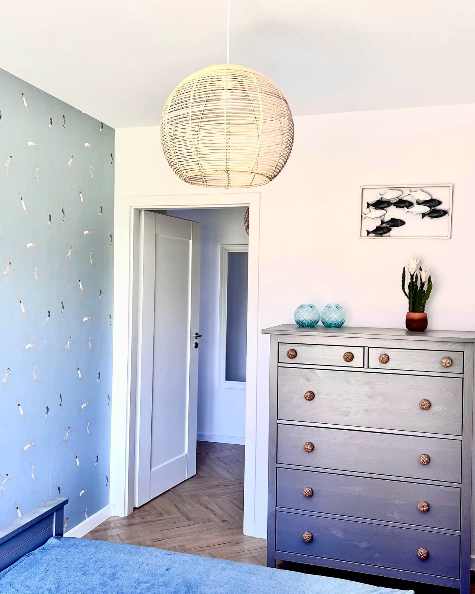
- 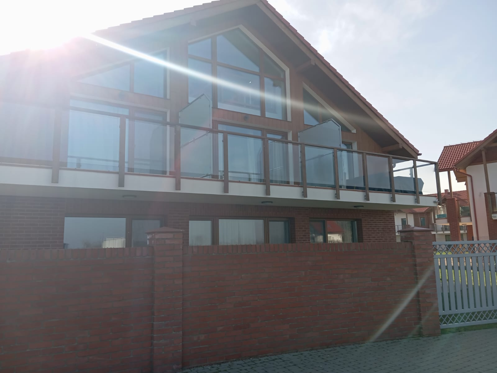
- 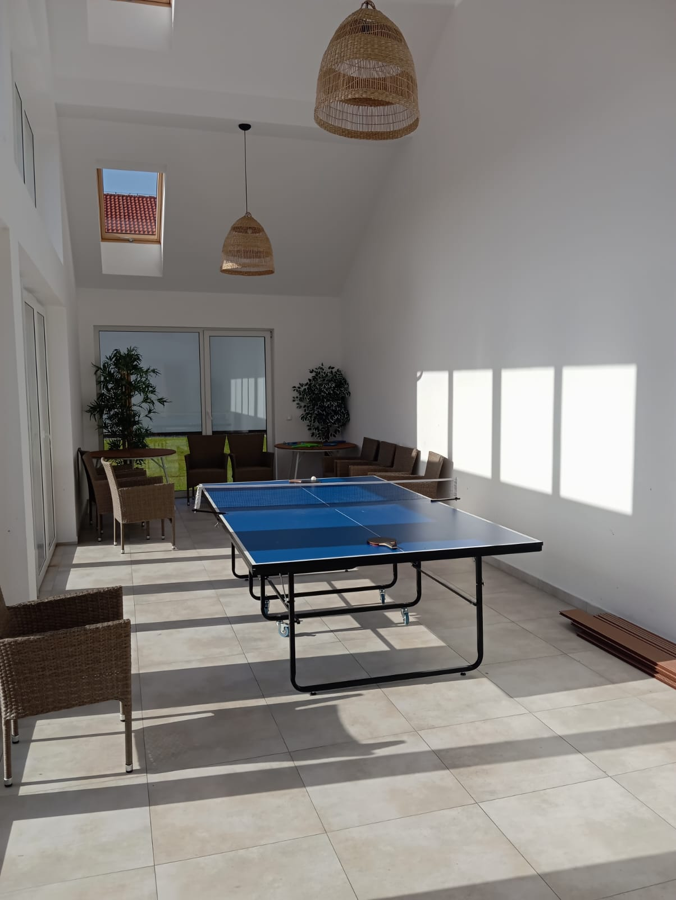
- 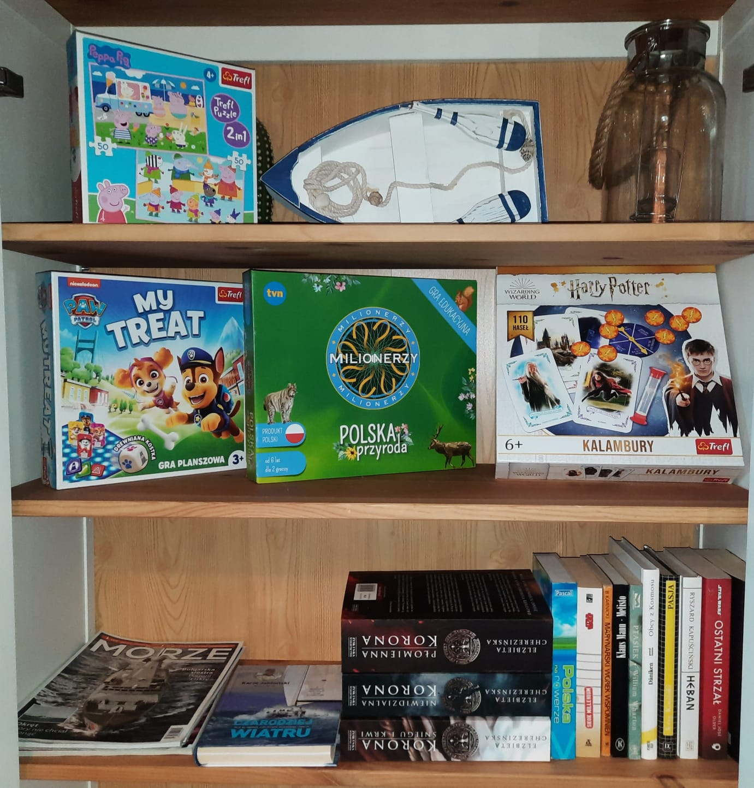
- 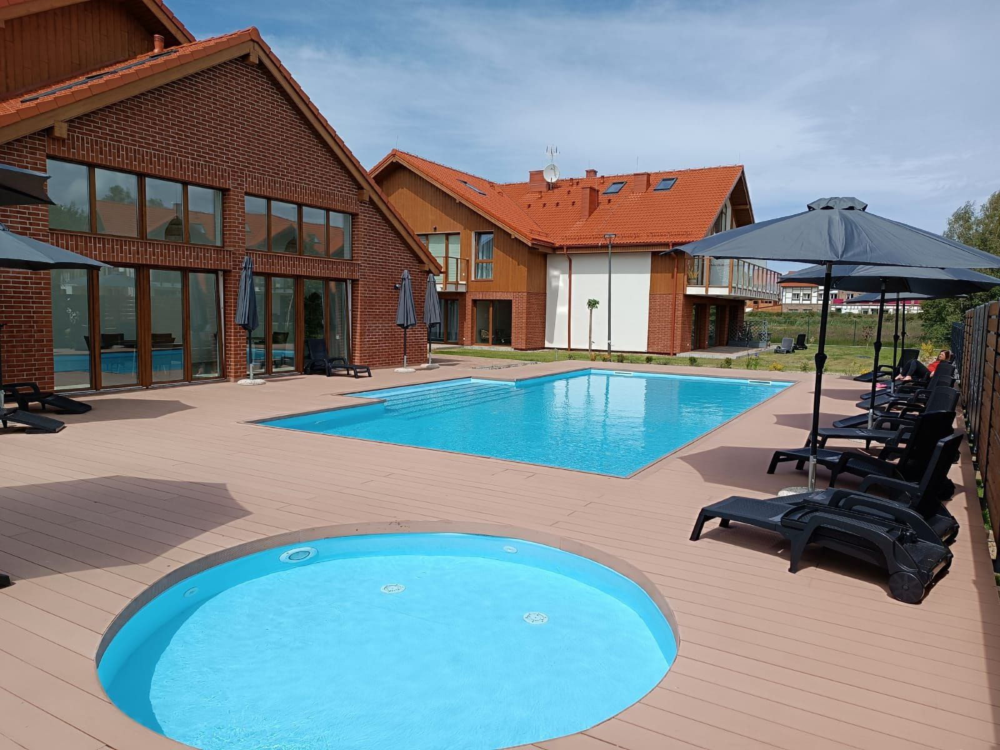
- 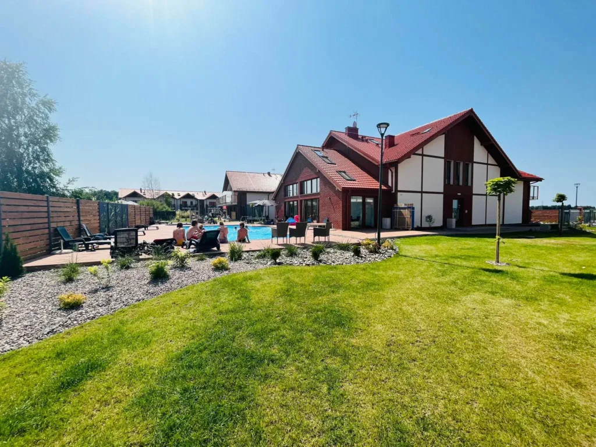
- 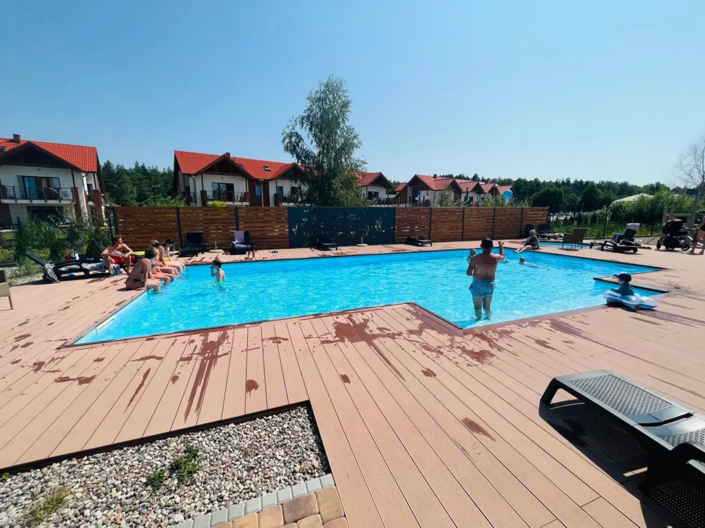

Kontakt KT
Skontaktuj się z nami, aby zarezerwować apartament:
Numer kontaktowy:
602 714 242
Kontakt mailowy:
mawo.trans@interia.pl
Adres apartamentu:
ul. Piaskowa 2/3, 84-360 Żarnowska